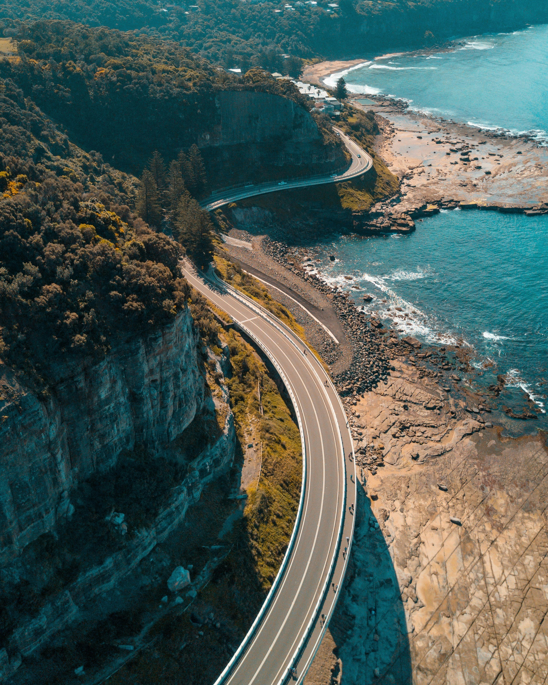
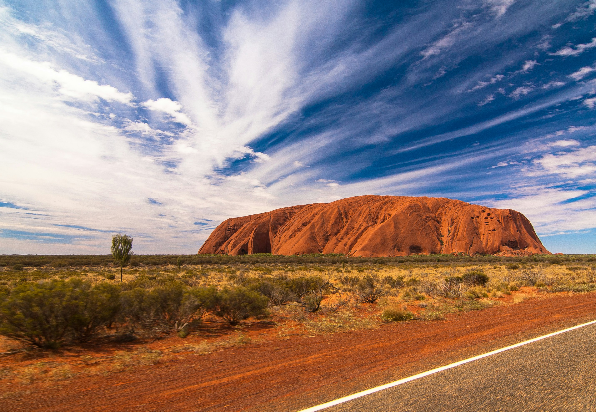
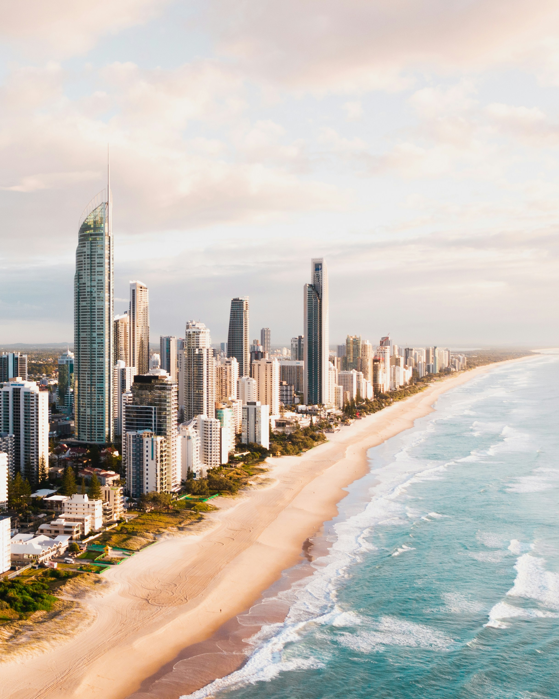
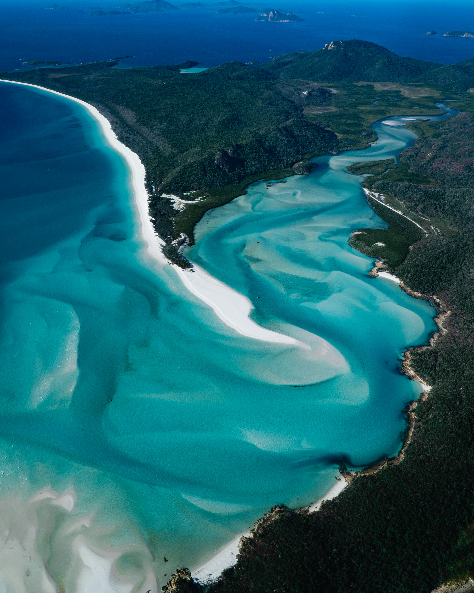
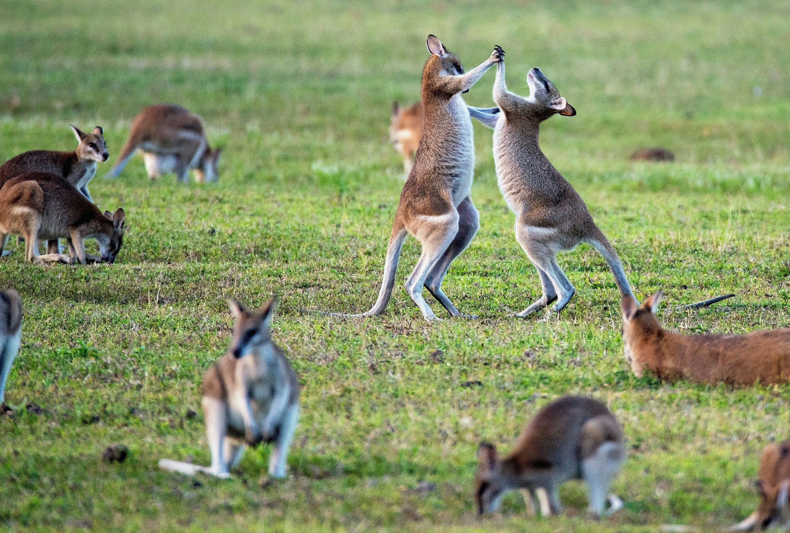
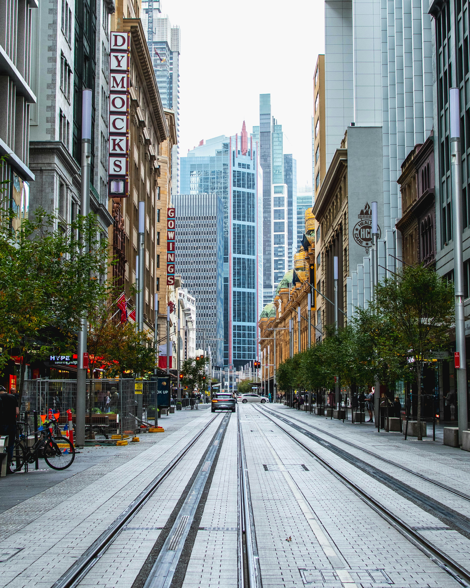

Australia is a continent of staggering natural scale and vibrant coastal energy.
From the iconic white sails of the Sydney Opera House to the iridescent underwater cities of the Great Barrier
Reef, this is a land that celebrates life in the open air. Australia offers a unique blend of sophisticated
metropolitan culture and some of the world's most pristine, unbridled wilderness, inviting you to discover the
southern spirit of adventure and luxury.
1. Sydney: Harbor of Iconography

Sydney is a city defined by its spectacular harbor, a shimmering stage for some of the
world’s most recognizable landmarks. The Sydney Opera House, an architectural masterpiece of the 20th
century with its soaring white sails, stands as a symbol of Australia’s creative spirit. Across the water,
the sturdy and majestic Harbor Bridge, known affectionately as the 'Coathanger,' offers an adventurous
ascent for those seeking a panoramic view of the 'Emerald City.' Beyond the harbor, Sydney's charm lies in
its diverse neighborhoods and vibrant beach culture. From the golden sands of Bondi and the clifftop walks
of Bronte to the historic cobblestone lanes of The Rocks, the city blends sophisticated urban living with an
unbridled love for the ocean. With its world-class dining, vibrant arts scene, and sun-drenched lifestyle,
Sydney remains the radiant gateway to the Australian continent.
2. The Great Barrier Reef: A Cosmic Wonder

Stretching over 2,300 kilometers along the Queensland coast, the Great Barrier Reef is the
largest coral reef system on Earth and a vibrant, living ecosystem so vast it is visible from space. This
UNESCO World Heritage site is a kaleidoscope of colorful coral gardens, home to thousands of species of
tropical fish, sea turtles, and majestic manta rays. Diving or snorkeling in these turquoise waters is an
immersion into a silent, underwater world of profound beauty and biological diversity. However, the reef is
more than just a tourist destination; it is a critical bellwether for the health of our oceans. Exploring
the reef with eco-certified guides provides not only an unforgettable adventure but also a deep
understanding of the delicate balance required to preserve this natural wonder for future generations. From
the Whitsunday Islands to the rugged northern reaches, the Great Barrier Reef offers an experience of
unparalleled natural awe.
3. Uluru: The Spiritual Heart of the Outback

In the geographic center of the continent, the massive sandstone monolith of Uluru rises
from the flat red desert like a colossal, ancient altar. Sacred to the Anangu people for tens of thousands
of years, Uluru radiates a powerful, almost spiritual energy that is deeply woven into the 'Dreamtime'
stories of the land. Standing 348 meters high, the rock possesses a majestic presence that shifts and
transforms with the light. As the sun sets, the surface glows with a spectrum of deep reds, oranges, and
purples, a silent spectacle that connects every visitor to the very foundations of the Australian continent.
Exploring the base of the rock reveals ancient petroglyphs and hidden waterholes, while the nearby Kata
Tjuta formations offer another layer of geological and cultural mystery. Uluru is not just a destination; it
is a profound encounter with the ancient soul of Australia.
4. Melbourne: The Cultural & Culinary Capital

Melbourne is a city that thrives on its sophisticated urban energy, celebrated as
Australia’s cultural and culinary capital. Its heart beats in the narrow, hidden laneways like Hosier Lane,
where world-class street art covers every inch of the walls. These lanes are also home to the city’s
legendary coffee culture and an array of tucked-away bars and boutique shops. Melbourne’s Victorian-era
architecture, such as the grand Royal Exhibition Building, blends seamlessly with modern landmarks like
Federation Square. The city's passion for the arts is reflected in its numerous galleries, theaters, and a
year-round calendar of festivals. For food lovers, Melbourne is a paradise, offering everything from
multicultural street food to avant-garde fine dining. With its tram-lined streets, lush gardens, and a
distinct European feel, Melbourne offers a refined yet deeply Australian city experience that rewards
exploration and curiosity.
5. The Great Ocean Road: Nature’s Coastal Canvas

One of the world’s most scenic coastal drives, the Great Ocean Road winds along Victoria’s
rugged southwestern coastline, offering a spectacular canvas of nature’s power. The journey is defined by
the Twelve Apostles—massive limestone stacks that rise majestically from the churning Southern Ocean. Carved
by millions of years of wind and waves, these icons are a testament to the relentless force of the sea.
Beyond the Apostles, the road reveals hidden coves, lush rainforests, and the dramatic cliffs of the
Shipwreck Coast. Stops like Loch Ard Gorge and London Bridge tell stories of maritime history and geological
upheaval. As you drive through coastal towns like Lorne and Apollo Bay, the scent of eucalyptus and the roar
of the surf create a sensory soundtrack to one of Australia’s most essential journeys. The Great Ocean Road
is a celebration of the raw, untamed beauty of the Australian wild.
6. Kangaroo Island: A Sanctuary for Wildlife

Located off the coast of South Australia, Kangaroo Island is a pristine sanctuary where
Australia’s unique wildlife thrives in its natural habitat. Often described as a 'zoo without fences,' the
island is home to thriving populations of kangaroos, koalas, wallabies, and the rare echidna. At Seal Bay
Conservation Park, visitors can walk among a colony of Australian sea lions as they bask on the sand, while
the Remarkable Rocks offer a surreal landscape of wind-sculpted granite boulders perched on the edge of the
ocean. The island is also a haven for foodies, famous for its Ligurian honey, fresh seafood, and artisan
cheeses. Kangaroo Island offers a rare opportunity to disconnect from the modern world and immerse yourself
in a landscape of rugged cliffs, calm beaches, and the quiet, rhythmic sounds of the natural world.
7. The Whitsundays: The Essence of Tropical Paradise

In the heart of the Great Barrier Reef lies the Whitsundays, a collection of 74 tropical
islands that embody the very essence of paradise. The star of the archipelago is Whitehaven Beach, famous
for its pure white silica sands and swirling turquoise waters that create a mesmerizing palette of colors.
Most visitors explore the islands by yacht or catamaran, sailing from one hidden cove to another and diving
into crystal-clear lagoons teeming with marine life. Hamilton Island offers luxury resorts and world-class
golf, while the more remote islands provide a sense of total seclusion. Whether you are flying over Heart
Reef in a helicopter or waking up on a boat to the sound of the tropical surf, the Whitsundays offer a
dreamlike escape into a world of endless blue and sun-drenched serenity.
8. Kakadu National Park: An Ancient Living Landscape

Kakadu National Park is an immense, ancient landscape in Australia’s Northern Territory
that protects a profound cultural and natural heritage. This UNESCO World Heritage site is home to one of
the world's greatest concentrations of indigenous rock art, with galleries at Ubirr and Nourlangie dating
back at least 20,000 years. These paintings tell the stories of the Bininj/Mungguy people and their
connection to the land over countless generations. Beyond its cultural depth, Kakadu is a place of dramatic
natural beauty, featuring vast wetlands, towering escarpments, and cascading waterfalls like Jim Jim and
Twin Falls. The park’s billabongs are teeming with wildlife, including the fearsome saltwater crocodile and
hundreds of species of birds. Exploring Kakadu is a journey through a living landscape where ancient
traditions and the raw power of nature continue to thrive in harmony.
The Infinite Spirit of Australia: Australia is a
continent that stays with you long after the journey ends. Its combination of profound natural wonders, ancient
cultural heritage, and vibrant coastal life creates an experience that is both life-affirming and deeply moving.
Whether you are wandering through the red heart of the desert or sailing through the turquoise waters of the
north, Australia offers a sense of freedom and discovery that is truly unique. Discover the southern spirit for
yourself. Welcome to Australia!
The Signature of Excellence
Why Choose Luxe Voyages?
Curated Excellence
Every destination and accommodation is hand-selected to meet the
highest standards of luxury.
Direct Booking
Book directly with verified premium providers to ensure the best rates
and exclusive perks.
Global Legacy
Our worldwide presence ensures you have premium support wherever your
journey takes you.
Guest Experiences
From Our Global Travelers
"Luxe Voyages didn't just book a trip; they crafted an unforgettable experience. Every detail
was handled with unparalleled professionalism."
Julian Montgomery
Verified
Global
Traveler